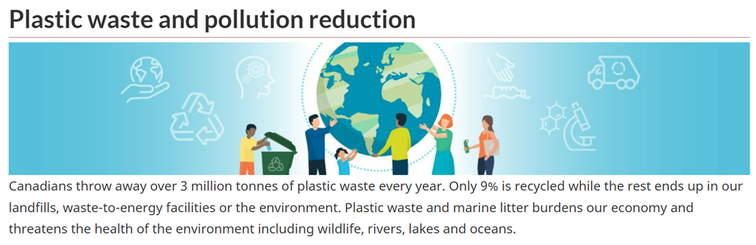

Live platform · grew out of my St. Clair College capstone
RecyclingNet
Photograph a pile of cans and bottles; the app counts them, pins them to a map, and turns them into a pickup request someone can profit from. Uber-style matching, but for recyclables.
The problem
One of the first things international students hit on arriving in Canada is the job search. Collecting recyclables is a way to earn money without sending out hundreds of résumés — and it happens to be good for the planet. What is missing is the matching layer: collectors do not know where the material is.
The City of Windsor's Open Data Catalogue logged nearly 5,000 service requests for uncollected recycling in 2022. At an average of 5 glass bottles and 15 cans per request at 10¢ deposit each, that is roughly $10,000 sitting on the curb.
Canadians throw away over 3 million tonnes of plastic waste every year. Only 9% is recycled while the rest ends up in our landfills. Government of Canada — Reduce plastic waste

How it works
- A user uploads a photo of recyclables from their phone.
- A fine-tuned object-detection model counts the items in each class.
- Geolocation is pulled from the image metadata and the request is written to PostgreSQL.
- Requests surface on a shared map, so collectors can plan a route that maximises the haul.
For the capstone I trained on a custom dataset labelled in Roboflow, comparing MobileNet, EfficientDet Lite and YOLOv5 before settling on the accuracy/latency trade-off that worked on a phone-sized image.
The app
Request tab
Upload a picture containing any of the three trained classes. The interface returns the count per class together with the latitude and longitude where the image was taken.

Map tab
Every request plotted on a map. I collected images across Windsor for about four months and ended up with more than 200 photos containing one or more of the target objects.

Dashboard tab
The key metrics: total requests, totals per class, requests per day since collection began, and three heatmaps showing where each material concentrates across Windsor.

Where it is now
The capstone prototype became recyclingnet.org, a recycling pickup platform for Ontario. The detection model was rebuilt along the way.
- YOLO11, oriented-bounding-box variant. Containers photographed on the ground are rarely axis-aligned; OBB boxes fit a bottle lying at an angle far more tightly than an upright rectangle, which cut double-counting in cluttered piles.
- Custom three-class dataset — tin cans, glass bottles, plastic bottles — annotated through a Label Studio pipeline, split 70/20/10 across train, validation and test.
- Fine-tuned on a Colab T4 GPU with the AdamW optimiser, which held up better than plain Adam once the learning rate came down.
What I took from it
- Collecting and labelling my own dataset was the expensive part — and the part that taught me the most about class imbalance and lighting conditions.
- Storing image metadata in PostgreSQL rather than in the app made the map and dashboard trivial to build on top.
- Annotation quality set the ceiling on the model. Moving to a real Label Studio pipeline paid off more than any architecture change.
- A model is only half the product; the routing and the incentive design are what make anyone use it.